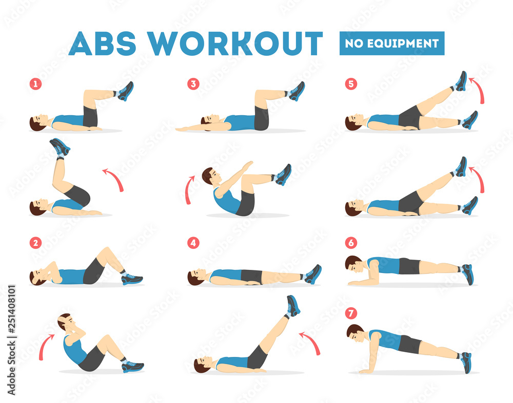

If your feeling up for it, here is an ab workout to finish off leg day strong!

Number 1: You are going to lift your legs and touch the sky with bottom of your feet for 20-25 reps
Number 2: These are regular sit ups that you can do for 20-25 reps
Number 3: These are a form of sit ups while your legs stay off the floor, try to get around 20 reps
Number 4: Keep your legs elevated the entire time and touch the sky with your toes for 15-20 reps
Number 5: Try to get around 30 reps per leg swing
Number 6: Planks! Try to go about 30 seconds to a minute or more for 3 sets
Number 7: Finish off strong with either planks (reference number 6) or you can alternate with number 7 for 30 seconds to a minute for 3 sets
Back To Main
WELL DONE!